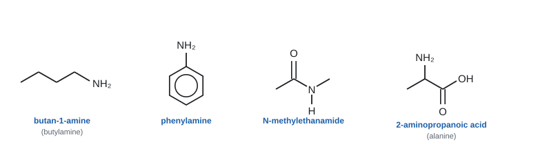
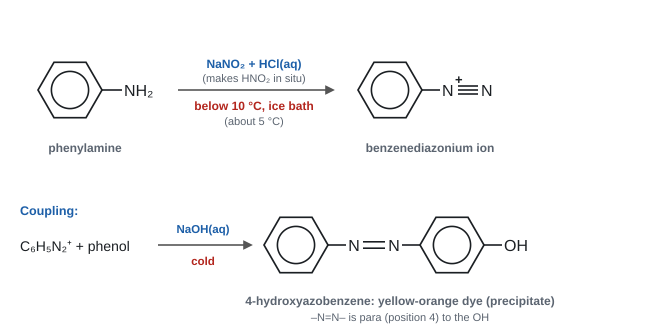
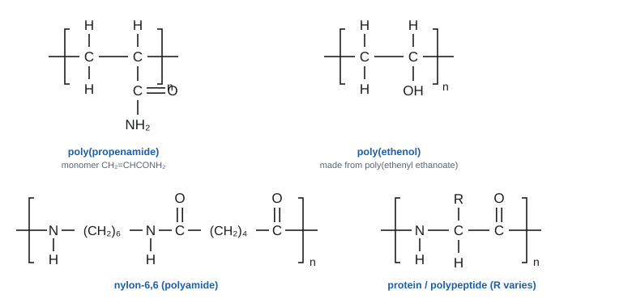
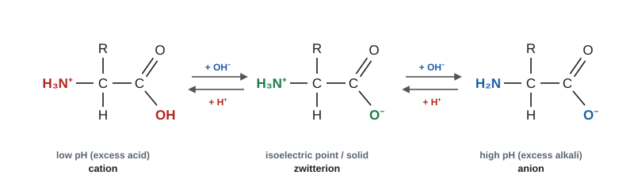

Organic nitrogen compounds
Nitrogen's lone pair is the key to this topic. It makes amines basic, lets them act as ligands and nucleophiles, and joins monomers into nylon, Kevlar and proteins. You will also meet azo dyes, the zwitterions of amino acids, and the difference between addition and condensation polymers.
Spec19.1Naming and drawing amines, amides and amino acids
Name amides, amines and amino acids, and draw their structural, displayed and skeletal formulae.
Amines
- An amine is ammonia with one or more H atoms replaced by carbon groups.
- Classify by the number of carbon groups on the nitrogen (not by the carbon the N is on, as you do for alcohols):
| Type | General formula | Example | Name |
|---|---|---|---|
| Primary (1°) | RNH₂ | CH₃CH₂CH₂CH₂NH₂ | butylamine (butan-1-amine) |
| Secondary (2°) | R₂NH | (CH₃)₂NH | dimethylamine |
| Tertiary (3°) | R₃N | (CH₃)₃N | trimethylamine |
| Quaternary ammonium ion | R₄N⁺ | (CH₃)₄N⁺ | tetramethylammonium ion |
- Naming: either name the alkyl group + "amine" (methylamine, ethylamine, propylamine), or use the IUPAC suffix "-amine" with a locant: propan-1-amine, propan-2-amine, butan-1-amine.
- Groups on the N in secondary and tertiary amines get the locant N: CH₃NHCH₂CH₃ is N-methylethylamine (or N-methylethanamine).
- When a higher-priority group is present (e.g. –COOH), the NH₂ becomes the prefix amino-: 2-aminopropanoic acid.
- Aliphatic amines have N joined to an alkyl chain. Aromatic amines have N joined directly to a benzene ring: C₆H₅NH₂ is phenylamine (also called aniline or aminobenzene).
Amides
- Amides contain –CONH₂ (or –CONHR, –CONR₂). The C=O carbon counts as carbon 1 of the chain.
- Name: stem + "-amide". CH₃CONH₂ is ethanamide, CH₃CH₂CONH₂ is propanamide, C₆H₅CONH₂ is benzamide, CH₂=CHCONH₂ is prop-2-enamide (propenamide).
- Groups on the nitrogen use the N- locant: CH₃CONHCH₃ is N-methylethanamide; CH₃CONHCH₂CH₂CH₂CH₃ is N-butylethanamide; CH₃CH₂CON(CH₃)₂ is N,N-dimethylpropanamide. Two different groups go in alphabetical order (N-ethyl-N-methyl…).
Amino acids
- An amino acid has an amine group (–NH₂) and a carboxylic acid group (–COOH).
- The natural ones are 2-amino acids: both groups are on carbon 2 (the carbon next to COOH). General formula RCH(NH₂)COOH. About 20 of them make up proteins, differing only in the R group.
- Name them as substituted carboxylic acids (the acid takes priority):
| Common name | R group | Systematic name |
|---|---|---|
| glycine | H | 2-aminoethanoic acid (aminoethanoic acid) |
| alanine | CH₃ | 2-aminopropanoic acid |
| serine | CH₂OH | 2-amino-3-hydroxypropanoic acid |
| phenylalanine | CH₂C₆H₅ | 2-amino-3-phenylpropanoic acid |
| aspartic acid | CH₂COOH | 2-aminobutanedioic acid |
Drawing them

- Structural: CH₃CH(NH₂)COOH. Displayed: every atom and every bond drawn, including N–H and O–H. Skeletal: carbon chain as zigzag lines, with N, O and the H atoms on N and O written in.
- To get a molecular formula from a skeletal formula, count the carbons at each line end and corner. Then give each carbon enough H atoms to make four bonds.
- Classify: "tertiary (amine) / 3°". "3rd / third" and "tertiary amide" are not accepted (WCH15 Jan 2022, Jun 2025).
- Names credited: "2-methylbutanamide" (WCH15 Jan 2021), "2-amino-3-methylpentanoic acid" (WCH15 Jun 2022), "2-amino-3-hydroxypropanoic acid" (WCH15 Oct 2024), "N-butylethanamide" (WCH15 Jun 2025), "prop-2-enamide / propenamide" (not "propanamide") (WCH15 Jun 2023).
- Functional groups in a drug molecule: "ester", "(primary) amine", "arene". Not "ketone" or "carboxylic acid" for an ester. "Carbonyl" is kept for aldehydes and ketones only.
Often asked as: name a compound from its skeletal formula; classify an amine; give the molecular formula from a skeletal one; identify functional groups.
Classifying amines like alcohols (by the carbon). Count the groups on the N.
In skeletal formulae, leaving the H off N or O (–N– instead of –NH–), or an O–H joined to the wrong atom.
Naming an amino acid "aminopropanoic-2 acid" or putting the amino group last. The acid gives the suffix; amino is a prefix with a number.
IUPAC names of other multifunctional compounds turn up in the same questions: 2-hydroxybenzoic acid (salicylic acid, WCH15 Oct 2023) and propane-1,2,3-triol (glycerol, WCH15 Jun 2024). The suffix names the main group, and everything else is a numbered prefix.
Spec19.2Reactions of primary amines
Understand the reactions of butylamine (aliphatic) and phenylamine (aromatic) with: (i) water, giving an alkaline solution; (ii) acids, giving salts; (iii) halogenoalkanes; (iv) ethanoyl chloride; (v) copper(II) ions, giving a complex ion.
The key is the lone pair on the nitrogen. It lets an amine act as a base (accepts H⁺), a nucleophile (attacks δ+ carbon) and a ligand (bonds to a metal ion).
(i) With water: an alkaline solution
CH₃CH₂CH₂CH₂NH₂(aq) + H₂O(l) ⇌ CH₃CH₂CH₂CH₂NH₃⁺(aq) + OH⁻(aq)
- The N lone pair accepts H⁺ from a water molecule, leaving OH⁻ ions, so the solution is alkaline (about pH 11–12). Butylamine is a weak base: the equilibrium lies to the left.
- Phenylamine is only slightly soluble and a much weaker base. Its solution is only very weakly alkaline (19.3).
(ii) With acids: salts
CH₃CH₂CH₂CH₂NH₂ + HCl → CH₃CH₂CH₂CH₂NH₃⁺Cl⁻ (butylammonium chloride)
C₆H₅NH₂ + HCl → C₆H₅NH₃⁺Cl⁻ (phenylammonium chloride)
- The salts are ionic, white crystalline solids that are soluble in water. Insoluble phenylamine dissolves in hydrochloric acid because it turns into the soluble salt.
- The H⁺ joins the N by a dative covalent bond using the lone pair.
- Adding NaOH(aq) gets the amine back: C₆H₅NH₃⁺ + OH⁻ → C₆H₅NH₂ + H₂O. This step is used in 19.5.
(iii) With halogenoalkanes: further alkylation
CH₃CH₂CH₂CH₂NH₂ + CH₃CH₂Br → CH₃CH₂CH₂CH₂NHCH₂CH₃ + HBr
- Nucleophilic substitution: the N lone pair attacks the δ+ carbon of C–Br (the same mechanism as NH₃ in Unit 2). The HBr formed reacts with more amine to give a salt.
- The product is itself an amine with a lone pair, so it can react again: primary → secondary → tertiary amine → quaternary ammonium salt. You get a mixture.
- With excess halogenoalkane the main product is the quaternary ammonium salt, e.g. (C₄H₉)(C₂H₅)₃N⁺Br⁻. Phenylamine reacts the same way, but more slowly.
(iv) With ethanoyl chloride: N-substituted amides
CH₃COCl + CH₃CH₂CH₂CH₂NH₂ → CH₃CONHCH₂CH₂CH₂CH₃ + HCl (N-butylethanamide)
CH₃COCl + C₆H₅NH₂ → CH₃CONHC₆H₅ + HCl (N-phenylethanamide)
- Vigorous at room temperature; steamy fumes of HCl. With excess amine, the HCl is taken up as a salt: CH₃COCl + 2RNH₂ → CH₃CONHR + RNH₃⁺Cl⁻.
- How it happens (addition–elimination):
- The carbonyl carbon is δ+: both O and Cl pull electrons away from it.
- The lone pair on N attacks this carbon, and the C=O π electrons move onto the O.
- The C=O re-forms and the C–Cl bond breaks, releasing Cl⁻ (a good leaving group).
- H⁺ is lost from the N, giving the amide and HCl.
(v) With copper(II) ions: a complex
- Add butylamine solution drop by drop to CuSO₄(aq):
- A little amine: pale blue precipitate of copper(II) hydroxide. The amine acts as a base, making OH⁻: [Cu(H₂O)₆]²⁺ + 2RNH₂ → [Cu(OH)₂(H₂O)₄] + 2RNH₃⁺
- Excess amine: the precipitate dissolves to a deep blue solution. The amine acts as a ligand: [Cu(H₂O)₆]²⁺ + 4RNH₂ → [Cu(RNH₂)₄(H₂O)₂]²⁺ + 4H₂O
- This is just like ammonia (Topic 17): N lone pairs form dative bonds to Cu²⁺.
- With phenylamine the expected observation is the pale blue precipitate (WCH15 Oct 2020).
- Amine in water: "the nitrogen has a lone pair", "which can accept a H⁺ (from water)", "leaving (an excess of) hydroxide ions" (WCH15 Jan 2022, pyridine).
- Butylamine + ethanoyl chloride: the displayed formula of N-butylethanamide and HCl (WCH15 Oct 2024).
- Amide-formation explanation, any three: "carbonyl carbon is electron-deficient / δ+", "nitrogen has a lone pair", "which forms a bond to the carbonyl carbon", "C–Cl bond breaks / Cl is a good leaving group" (WCH15 Jun 2022). The name of the mechanism earns nothing on its own.
- Halogenoalkane mechanism (WCH15 Jan 2022): "arrow from lone pair on N to C", "dipole and arrow from C–Cl to Cl", "intermediate with + on N", "arrow from N–H bond to N⁺". N⁻ is never awarded.
- Cu²⁺ + phenylamine: "(pale) blue precipitate"; blue-green is not accepted.
- Salt with HCl: "procaine hydrochloride is ionic", "the ions are hydrated by water", so it is more soluble (WCH15 Jan 2025).
Often asked as: write the equation (displayed or molecular formulae), explain why a solution is alkaline, give observations with Cu²⁺, explain why a drug is sold as its hydrochloride.
Leaving out the HCl in the ethanoyl chloride equation (Oct 2024 report).
Writing that the amine attacks a carbocation. In the acyl chloride reaction there is no carbocation: the N attacks the δ+ carbon of C=O (Jun 2022 report).
Mixing up the words base (takes H⁺) and nucleophile (attacks δ+ carbon). Both use the lone pair, but they are different roles.
Putting the H⁺ on the wrong N in a molecule with two nitrogens, or drawing the N–H⁺ bond without a dative arrow when the question asks for one.
- Tertiary and ring amines (pyridine, trimethylamine) behave the same way: base in water, nucleophile towards chloromethane (WCH15 Jan 2022, Jun 2025).
- Drugs as salts: amines are converted into hydrochlorides because the ionic salts are more soluble in water (ion–dipole attractions with water) (WCH15 Jan 2025).
Spec19.3Solubility of amines and their strength as bases
Understand that amines mix with water because of hydrogen bonding, and explain why ammonia, primary aliphatic amines and primary aromatic amines differ in base strength.
Mixing with water
- Small amines (methylamine to butylamine) are miscible with water.
- Two kinds of hydrogen bond form:
- the lone pair on the amine N with a δ+ H of water: N···H–O;
- a δ+ H on the amine N with a lone pair on water's O: N–H···O.
- As the hydrocarbon chain gets longer, the non-polar part disrupts the hydrogen bonding, so solubility falls. Phenylamine, with its large benzene ring, is only slightly soluble.
- Primary amines boil higher than alkanes of similar Mr (they have hydrogen bonds between molecules), but lower than alcohols. N is less electronegative than O, so N–H···N hydrogen bonds are weaker than O–H···O.
Hydrogen-bond diagrams: draw the lone pair on the N (or O) that accepts the bond, label δ+ on H and δ− on N and O, and keep N···H–O in a straight line (about 180°). Use a dashed line for the hydrogen bond, never a solid line or a dative arrow.
Base strength
A base accepts a proton (H⁺), using the lone pair on nitrogen. The more available that lone pair is, the stronger the base.
| Base | pKa of its conjugate acid | Strength | Reason |
|---|---|---|---|
| butylamine | about 10.6 | strongest | alkyl group releases electrons (positive inductive effect), raising the electron density on N, so the lone pair is more available |
| ammonia | 9.3 | in between | reference: only H atoms on N |
| phenylamine | about 4.6 | weakest | lone pair on N overlaps with the delocalised π system of the ring, so electron density on N is lower and the lone pair is less available |
Order: butylamine > ammonia > phenylamine. (A higher pKa of the conjugate acid means a stronger base. You don't need to learn these numbers.)
Model answer (why phenylamine is a weaker base than ammonia):
- Bases accept H⁺ using the lone pair on nitrogen.
- In phenylamine, the lone pair on N overlaps with (is partly delocalised into) the π electrons of the benzene ring.
- So the lone pair is less available and nitrogen is less able to accept H⁺ than in ammonia.
- Phenylamine: "lone pair on N overlaps with the π cloud / delocalised electrons / interacts with the ring", "so the N is less able to accept a H⁺ / proton" (WCH15 Oct 2020). "Lone pair is less available to accept H⁺ / form a dative bond" is accepted.
- Butylamine: "acts as a base by accepting a proton", "greater electron density on the nitrogen", "as a result of the alkyl group releasing electron density" (WCH15 Oct 2024). "Positive inductive effect" and "electron pushing" are accepted. "Nitrogen is more negative" and electronegativity arguments are not.
- Hydrogen bond: "lone pair (of electrons)" included; "dipoles on N, H and O"; "linear about the H" (170–190°) (WCH15 Oct 2024, Jun 2025).
Often asked as: rank three bases (MCQ), explain the order (2–3 marks), draw a hydrogen bond between an amine and water.
Finishing at "the lone pair is delocalised" without the conclusion: less able to accept H⁺ (Oct 2020 report).
Saying the benzene ring makes the aromatic amine more likely to be protonated: the argument goes the other way (Jun 2023 report).
Not defining basicity. The first mark is often just "a base accepts a proton / H⁺" (Oct 2024 report).
Hydrogen-bond diagrams with no lone pair, or with the bond bent.
- Two nitrogens in one molecule (e.g. the anaesthetic procaine): the tertiary alkyl amine N is the more basic one, and the aromatic amine N, whose lone pair is drawn into the ring, is less basic. Discuss both nitrogens (WCH15 Jun 2023, Jan 2025).
- Amides are not basic: the N lone pair is delocalised onto the C=O group.
Spec19.4Making primary aliphatic amines
Know the reagents and general conditions for making primary aliphatic amines (i) from halogenoalkanes and (ii) by reducing nitriles.
(i) From a halogenoalkane and ammonia
CH₃CH₂CH₂CH₂Br + 2NH₃ → CH₃CH₂CH₂CH₂NH₂ + NH₄Br
- Reagents and conditions: excess concentrated ammonia in ethanol, heated in a sealed tube (under pressure).
- Why each one:
- Sealed tube: ammonia is a gas and would escape from an open flask when heated.
- Ethanol as solvent: in water, OH⁻ ions would compete and give some alcohol.
- Excess ammonia: the primary amine product is also a nucleophile and can react with more halogenoalkane (19.2 iii). Lots of NH₃ makes it more likely that each halogenoalkane meets NH₃ instead. Even so, you get some secondary and tertiary amine.
(ii) By reducing a nitrile
CH₃CH₂CH₂CN + 4[H] → CH₃CH₂CH₂CH₂NH₂
- Reagent: lithium tetrahydridoaluminate(III), LiAlH₄, in dry ether, then dilute acid. (Catalytic hydrogenation with H₂ and a nickel catalyst also works, but one mark scheme refused it, so LiAlH₄ is the safe answer.)
- The nitrile comes from a halogenoalkane: KCN in ethanol, heat under reflux. CH₃CH₂CH₂Br + CN⁻ → CH₃CH₂CH₂CN + Br⁻
- So the nitrile route adds one carbon to the chain: 1-bromopropane (3 C) → butanenitrile (4 C) → butylamine (4 C).
- It also gives only the primary amine, with no further alkylation.
| Route | Reagents | Carbon chain | Product purity |
|---|---|---|---|
| Halogenoalkane + NH₃ | excess NH₃, ethanol, heat, sealed tube | same length | mixture of amines |
| Nitrile reduction | LiAlH₄ in dry ether | one longer than the halogenoalkane used | primary amine only |
- "potassium cyanide and (aqueous) ethanol / ethanolic KCN" (NaCN accepted). KCN "in acid" or HCN for a halogenoalkane substitution is not accepted.
- "LiAlH₄ / lithium tetrahydridoaluminate(III) in (dry) ether". Oct 2020 also allowed H₂ + Ni or sodium and ethanol, but Jan 2023 refused H₂ + Ni/Pt/Pd.
- Nitrile hydrolysis (to an acid, not an amine): "aqueous acid / H⁺(aq)" and "reflux". Concentrated acid and "oxidation" are not accepted.
Often asked as: reagents for a step in a multi-step synthesis (WCH15 Jan 2023, 5 marks: ethanolic KCN, then LiAlH₄, then ethanoyl chloride).
Forgetting "ethanolic" for KCN (Jan 2023 report). With aqueous KCN you also get OH⁻ substitution.
Using a reagent that removes or adds the wrong number of carbons. Count carbons at every step.
Nitrile hydrolysis: heating a nitrile under reflux with dilute HCl gives the carboxylic acid: CH₃CN + HCl + 2H₂O → CH₃COOH + NH₄Cl. Alkaline hydrolysis gives the carboxylate ion, which must then be acidified (WCH15 Jun 2024, Jan 2026). Together with KCN, this is a way to add one carbon and make an acid.
Spec19.5Making aromatic amines: reducing nitro compounds
Know that aromatic amines are made by reducing aromatic nitro compounds with tin and concentrated hydrochloric acid.
C₆H₅NO₂ + 6[H] → C₆H₅NH₂ + 2H₂O
Method
- Heat nitrobenzene with tin and concentrated hydrochloric acid under reflux. Tin is the reducing agent: it is oxidised to tin(II)/tin(IV), and supplies the electrons. It is not a catalyst.
- In the acid, the product is the phenylammonium ion, C₆H₅NH₃⁺ (as a salt with chloride and tin ions).
- Add excess sodium hydroxide solution to liberate the free amine: C₆H₅NH₃⁺ + OH⁻ → C₆H₅NH₂ + H₂O (tin hydroxides also precipitate).
- Separate the phenylamine by steam distillation (20.5), then purify.
- This is a reduction (O atoms removed, H atoms added).
- Overall route from benzene: nitration (conc. HNO₃/conc. H₂SO₄, 50–55 °C) → reduction (Sn/conc. HCl) → phenylamine.
- Uses of phenylamine: making azo dyes (19.6), and drugs and other chemicals.
- "tin and (concentrated) hydrochloric acid" (Fe or Zn in place of Sn accepted; "heat / reflux" ignored).
- Not accepted: dilute acid, sulfuric or nitric acid, LiAlH₄, "Sn is a catalyst", or NaOH in the same step as the acid.
- Type of reaction: "reduction" (redox accepted; "hydrogenation" ignored).
Often asked as: reagents for the nitro → amine step (most series), name the type of reaction, write the equation using [H].
Only about 40% of candidates knew this reagent in one series (Jan 2022 report). Learn it: Sn + concentrated HCl.
Suggesting LiAlH₄, or calling tin a catalyst, or listing NaOH with the acid as one step (Jun 2023 report).
Tin and HCl reduce the NO₂ group but leave a COOH group alone, so 2-nitrobenzoic acid gives 2-aminobenzoic acid (WCH15 Oct 2021). Making the mixture alkaline afterwards to free the amine is also credited (WCH15 Jun 2022 report).
Spec19.6Diazotisation and azo dyes
Describe how an aromatic amine reacts with nitrous acid to give a benzenediazonium ion, and how this then couples with phenol to make a dye.

Diazotisation: react phenylamine with nitrous acid below 10 °C. Nitrous acid is unstable, so it is made in the flask from sodium nitrite and hydrochloric acid: NaNO2 + HCl → HNO2 + NaCl.
C6H5NH2 + HNO2 + HCl → C6H5N2+Cl− + 2H2O, forming benzenediazonium chloride, which contains the –N≡N+ group.
Keep it cold: above about 10 °C the diazonium ion reacts with water, C6H5N2+ + H2O → C6H5OH + N2 + H+, releasing nitrogen gas. Much below 0 °C the reaction is too slow.
Coupling: add the diazonium salt to phenol dissolved in sodium hydroxide. The diazonium ion is a weak electrophile that attacks the activated ring: C6H5N2+ + C6H5OH → C6H5–N=N–C6H4OH + H+.
The product, 4-hydroxyazobenzene, is a yellow-orange azo dye. The –N=N– link joins two benzene rings into one long delocalised system that absorbs visible light. Azo compounds are used as dyes, pigments and food colourings.
Step 1: diazotisation
- Nitrous acid (HNO₂) is unstable, so it is made in the flask: NaNO₂ + HCl → HNO₂ + NaCl.
- Dissolve phenylamine in excess hydrochloric acid, cool in an ice bath to below 10 °C (about 5 °C), and add cold sodium nitrite (sodium nitrate(III)) solution slowly.
C₆H₅NH₂ + HNO₂ + H⁺ → C₆H₅N₂⁺ + 2H₂O
- The product is the benzenediazonium ion, C₆H₅–N⁺≡N. The + is on the N joined to the ring.
- Why cold? Above about 10 °C the diazonium ion decomposes: it reacts with water to give phenol and nitrogen gas (you would see bubbles).
C₆H₅N₂⁺ + H₂O → C₆H₅OH + N₂ + H⁺
Below 0 °C the reaction is too slow and the solution may freeze, so don't go below 0 °C.
Step 2: coupling
- Add the cold diazonium solution to phenol dissolved in sodium hydroxide solution (alkaline), kept cold.
- The diazonium ion is an electrophile. It attacks the activated ring of phenol (as the phenoxide ion) at position 4, opposite the –OH: electrophilic substitution.
C₆H₅N₂⁺ + C₆H₅OH → C₆H₅–N=N–C₆H₄OH + H⁺
- The product, 4-hydroxyazobenzene, is a yellow-orange precipitate: an azo dye. The –N=N– link is the azo group.
- Why coloured? The N=N joins the two rings into one large delocalised system. This lets the molecule absorb visible light. It also makes the dye stable.
- Other coupling partners give other colours: naphthalen-2-ol gives a red dye; N,N-dimethylphenylamine gives methyl red (WCH15 Oct 2021).
- Reagents: "sodium nitrite / sodium nitrate(III) / NaNO₂ and hydrochloric acid" (HNO₂ + HCl accepted). "Sodium nitrate" and "nitric acid" are not accepted.
- Temperature: "at 5 °C / between 0 and 10 °C" (ice bath accepted). "Below 0 °C" is not accepted (WCH15 Jun 2025).
- Why: "diazonium ion decomposes / reacts with water / forms phenol" (above 10 °C); "rate too slow" (below 0 °C). "Side reactions", "yield too low" and "freezes" are ignored (WCH15 Oct 2021).
- Diazonium ion: ArN⁺≡N, with the + on the correct N; "N₂⁺" is not accepted.
- Dye: ring–N=N–ring with the OH in the right place. "–N₂–" or N≡N between the rings is not accepted.
- Coupling conditions: "phenol dissolved in an alkaline solution" at about 5 °C (WCH15 Jan 2025 MCQ).
Often asked as: reagents and temperature (2 marks, most series); draw the diazonium ion or the dye; explain the temperature; the structure of a dye from an unfamiliar amine and coupling partner.
Writing nitrate or nitric acid instead of nitrite (sodium nitrate(III)).
Drawing N≡N or –N₂– in the dye. The dye has a double bond, N=N.
Putting the OH next to the azo link when phenol couples. It ends up para (position 4); with 2-hydroxybenzoic acid the positions follow the stem (Jan 2022 report).
- E/Z isomerism about N=N: there is restricted rotation about the N=N double bond, so azo dyes have E and Z isomers (WCH15 Oct 2020).
- Sulfonate groups (–SO₃⁻ Na⁺) are added to dyes such as sunset yellow to make them soluble in water (WCH15 Jun 2025).
- Dye purification by recrystallisation and percentage-yield questions (WCH15 Jun 2025).
Spec19.7Making amides from acyl chlorides
Understand that amides can be made from acyl chlorides.
- An acyl chloride reacts with ammonia to give an amide, or with a primary amine to give an N-substituted amide. Both happen quickly at room temperature, giving steamy fumes of HCl.
| Reactants | Equation | Product |
|---|---|---|
| propanoyl chloride + ammonia | CH₃CH₂COCl + NH₃ → CH₃CH₂CONH₂ + HCl | propanamide |
| with excess ammonia | CH₃CH₂COCl + 2NH₃ → CH₃CH₂CONH₂ + NH₄Cl | propanamide |
| propanoyl chloride + methylamine | CH₃CH₂COCl + CH₃NH₂ → CH₃CH₂CONHCH₃ + HCl | N-methylpropanamide |
| ethanoyl chloride + phenylamine | CH₃COCl + C₆H₅NH₂ → CH₃CONHC₆H₅ + HCl | N-phenylethanamide |
- With excess ammonia, the HCl reacts with ammonia to form ammonium chloride, a white solid.
- The mechanism is addition–elimination (19.2 iv): N lone pair → δ+ carbonyl carbon; C–Cl breaks; H⁺ lost.
- To make an amide from a carboxylic acid, first convert the acid to the acyl chloride with PCl₅ (or SOCl₂), then add NH₃. For example, benzoic acid → benzoyl chloride → benzamide (WCH15 Oct 2023).
- Ethanoic anhydride does the same job more slowly and gives ethanoic acid instead of HCl (see the aspirin practical, 20.4).
- "ammonia / NH₃ added to an acyl chloride"; to get the acyl chloride, "phosphorus(V) chloride / PCl₅ (or thionyl chloride)". "Ammonia added to benzoic acid" is not accepted: it only makes the ammonium salt (WCH15 Oct 2023).
- Acylating agent: "ethanoyl chloride or ethanoic anhydride". "Ethanoic acid" is not accepted (WCH15 Jan 2023).
Often asked as: the last step of a synthesis route; the product of an acyl chloride with a given amine; the equation including HCl.
Adding ammonia straight to a carboxylic acid to make an amide. That is an acid–base reaction: it gives an ammonium salt (Oct 2023 report).
Getting distracted by other functional groups in a big molecule. Find the C–Cl and the N–H that react (Oct 2021 report).
- Amide hydrolysis: amides (and peptide links) are broken by heating under reflux with acid (gives the carboxylic acid + ammonium ion) or alkali (gives the carboxylate ion + ammonia or amine). This is how proteins are broken into amino acids (19.11).
- Choosing the acylating agent on safety and atom-economy grounds: ethanoyl chloride v ethanoic anhydride (WCH15 Jan 2024; see 20.3).
Spec19.8Condensation and addition polymerisation
Describe (i) condensation polymerisation to make polyamides such as nylon, and proteins; (ii) addition polymerisation, including poly(propenamide) and poly(ethenol).
(i) Condensation polymers: polyamides
- A condensation polymer forms when monomers join and a small molecule is lost at each link (H₂O or HCl).
- Each monomer needs two reactive groups, one at each end, so the chain can keep growing.
- Polyamides contain the amide link –CONH–.
Nylon-6,6
- Monomers: hexane-1,6-diamine H₂N(CH₂)₆NH₂ and hexanedioic acid HOOC(CH₂)₄COOH. The "6,6" counts the carbon atoms in each monomer.
- Each –COOH reacts with an –NH₂, losing H₂O and forming an amide link:
n H₂N(CH₂)₆NH₂ + n HOOC(CH₂)₄COOH → –[NH(CH₂)₆NHCO(CH₂)₄CO]n– + 2n H₂O - In the lab, the diacyl chloride (hexanedioyl dichloride) is used instead of the acid. It reacts quickly at room temperature, losing HCl: the "nylon rope trick", where nylon is pulled from the boundary between the two solutions.
- Nylon-6,10 uses decanedioyl dichloride (10 C) with hexane-1,6-diamine.
- Kevlar: benzene-1,4-diamine + benzene-1,4-dicarboxylic acid (or its dichloride). It is a polyamide with benzene rings in the chain.
Proteins
- Proteins are natural polyamides. Their monomers are amino acids, and each amino acid has both an –NH₂ and a –COOH, so one type of monomer is enough.
- The amide link between amino acids is called a peptide bond (–CONH–). Each one forms with the loss of H₂O (19.11).
(ii) Addition polymers
- An addition polymer forms when the C=C double bonds of many monomers open and join. Nothing is lost: the polymer is the only product (100% atom economy).
Poly(propenamide)
- Monomer: propenamide (prop-2-enamide), CH₂=CHCONH₂.
- n CH₂=CHCONH₂ → –[CH₂–CH(CONH₂)]n–
- The many –CONH₂ groups hydrogen-bond with water, so the polymer absorbs a lot of water to form a gel. It is used in water treatment (to clump fine particles together), as a thickener and in gels for separating proteins and DNA. The monomer is toxic; the polymer is not.
Poly(ethenol) (polyvinyl alcohol)
- The "monomer" ethenol, CH₂=CHOH, doesn't exist in a usable form: it rearranges at once to ethanal.
- So poly(ethenol) is made in two steps:
- Ethenyl ethanoate (CH₂=CHOOCCH₃) is addition-polymerised to poly(ethenyl ethanoate).
- The ester groups are swapped for –OH groups by reaction with methanol (a hydrolysis-type exchange). How many are swapped controls how soluble the product is (19.10).
- Repeat unit: –[CH₂–CH(OH)]–
| Addition | Condensation | |
|---|---|---|
| Monomers | C=C in each monomer | two reactive groups per monomer (e.g. –NH₂ and –COOH) |
| By-product | none | small molecule (H₂O or HCl) at each link |
| Main chain | only carbon atoms | contains other atoms (N in polyamides, O in polyesters) |
| Examples | poly(propenamide), poly(ethenol), poly(ethene) | nylon-6,6, Kevlar, proteins |
- Condensation polymer: "a very large molecule / formed from a large number of monomers" and "a small molecule (H₂O / HCl) splits off" at each link. "Formed by addition" is not accepted (WCH15 Jun 2023).
- Nylon-6,6 monomers: "hexanedioyl dichloride" (or hexanedioic acid) and "hexane-1,6-diamine". Wrong connectivity (e.g. OH–C instead of C–OH) is penalised once.
Often asked as: identify the type of polymerisation or the monomers (MCQ); define a condensation polymer; draw the monomers of a given polymer.
Drawing a monomer for an addition polymer without the C=C, or with methyl groups where the continuation bonds were (Jan 2022, Jun 2023 reports).
Giving the acid when the question's reaction loses HCl (it needs the acyl chloride), or the other way round.
Saying poly(ethenol) is made from ethenol.
- Nylon-6 is made by ring-opening polymerisation of caprolactam (a cyclic amide). The ring opens at the C–N bond. Repeat unit –[CO(CH₂)₅NH]– (WCH15 Jun 2023).
- Hydrogels: poly(propenamide) (PAM), poly(propenoic acid) (PAA) and PVP absorb water. PAA releases a drug above pH 8, because its –COOH groups become –COO⁻ and the negative charges repel (WCH15 Jun 2023).
Spec19.9Repeat units of these polymers
Draw the structural formulae of the repeat units of the polymers in 19.8.

| Polymer | Repeat unit |
|---|---|
| poly(propenamide) | –[CH₂–CH(CONH₂)]– |
| poly(ethenol) | –[CH₂–CH(OH)]– |
| nylon-6,6 | –[NH(CH₂)₆NH–CO(CH₂)₄CO]– |
| Kevlar | –[NH–C₆H₄–NH–CO–C₆H₄–CO]– (rings joined at positions 1 and 4) |
| polypeptide (general) | –[NH–CHR–CO]– |
| poly(glycine) | –[NH–CH₂–CO]– |
Rules
- Addition polymer: the repeat unit is the monomer with its C=C turned into C–C and two continuation bonds, one from each of the two former C=C carbons. Substituents hang off the chain.
- Condensation polymer from two monomers: the repeat unit contains one of each monomer joined by one amide link, with an NH at one end and a CO at the other.
- Continuation bonds cross the brackets. Don't put CH₃ or H at the ends.
Working backwards: monomers from a polymer
- Addition: take the two main-chain carbons of the repeat unit, put a C=C between them, and remove the continuation bonds.
- Polyamide: break each C–N bond of the amide link. Add OH to the C=O end (acid) or Cl (acyl chloride), and H to the N end (amine).
Worked example: degree of polymerisation
A sample of nylon-6,6 has a mean relative molecular mass of 45 000. How many repeat units are there in an average chain?
Repeat unit: C₁₂H₂₂N₂O₂.
Mr = (12 × 12.0) + (22 × 1.0) + (2 × 14.0) + (2 × 16.0) = 144 + 22 + 28 + 32 = 226.
Number of repeat units = 45 000 ÷ 226 = about 200.
Worked example: percentage by mass of OH in poly(ethenol)
Repeat unit CH₂CH(OH) = C₂H₄O, Mr = 44.0. Mass of OH in it = 17.0.
% OH = 17.0 ÷ 44.0 × 100 = 38.6%.
The answer is the same for any number of units: for three units, 51 ÷ 132 = 38.6% (WCH15 Jun 2024).
- Repeat unit with "continuation bonds" and the amide link correct, e.g. "–CO(CH₂)₅NHCO(CH₂)₅NH–" for two units of nylon-6.
- Number of repeat units = polymer Mr ÷ repeat-unit Mr (e.g. 300 000 ÷ 158 = 1900, WCH15 Jan 2022). Number of molecules = moles × 6.02 × 10²³ (WCH15 Jun 2023).
Often asked as: draw a repeat unit, give the monomers, calculate the repeat-unit Mr and the number of units.
Miscounting the monomer's Mr (extra carbons at the continuation bonds; Jun 2023 report).
Missing the H on the N in a skeletal or displayed polyamide.
Joining a cyclic monomer through the wrong atom (e.g. caprolactam rings joined through the N; Jun 2023 report).
Spec19.10Physical properties of polyamides and poly(ethenol)
Comment on the physical properties of polyamides, and on the solubility of poly(ethenol) in water, in terms of hydrogen bonding. Include soluble laundry bags and liquid-detergent capsules.
Polyamides
- The N–H of one chain forms hydrogen bonds with the C=O of a neighbouring chain. There are also London forces along the chains.
- These interchain forces are much stronger than the London forces alone between poly(alkene) chains. So polyamides have higher melting temperatures and higher tensile strength, and make good fibres (clothing, ropes, carpets).
- Kevlar: flat, rigid chains (benzene rings in the backbone) line up regularly, with many hydrogen bonds between them. This makes it very strong and heat-resistant: used in bullet-proof vests, protective gloves and helmets.
- Polyamides can be hydrolysed at the amide links by acids or alkalis, which weakens them.
Poly(ethenol)
- Every second carbon carries an –OH group. These form hydrogen bonds with water molecules, so poly(ethenol) dissolves in water.
- Solubility depends on how many OH groups there are:
- Leaving some ester groups in place (partial hydrolysis) gives a polymer that dissolves in cold or warm water.
- Almost fully converted poly(ethenol) has so many hydrogen bonds between its own chains that it dissolves only in hot water.
- Uses:
- Soluble laundry bags in hospitals: dirty linen goes into the washing machine still in the bag, which dissolves in the wash. Staff don't handle the linen, so there is no risk of cross-contamination (infection).
- Liquid-detergent capsules (liquitabs): the film holds the liquid, which contains very little water, and dissolves when it meets the wash water.
- Others: dissolving stitches and water-soluble packaging.
- Polyamide v polyalkene melting point: "hydrogen bonding (and London forces) between polyamide chains is stronger than the London forces between polyalkene chains, so more energy is needed to separate the chains". Any mention of covalent bonds breaking scores 0. Hydrogen bonding "to water" is not accepted here (WCH15 Oct 2023).
- Poly(ethenol): "OH groups can form hydrogen bonds with water", "high percentage of OH groups, so soluble" (WCH15 Jun 2024).
- PAM absorbs water: "can form many hydrogen bonds with water", "at the NH₂ and the C=O" (both sites), plus a correct hydrogen-bond diagram (WCH15 Jun 2023).
- Laundry bags: "no risk of cross-contamination", "no need to wash (and dry) the bags". "Biodegradable", cost and disposal are ignored.
Often asked as: explain a melting temperature or a solubility; explain the advantage of soluble laundry bags; draw hydrogen bonds between a polymer and water.
Saying the amide bond is strong. Melting a polymer separates chains: it breaks intermolecular forces, not covalent bonds (Oct 2023 report).
Writing "biodegradable" as the advantage of laundry bags (Jun 2024 report).
Showing hydrogen bonds at only one site of the –CONH₂ group (Jun 2023 report).
Plasticisers: glycerol (propane-1,2,3-triol) is added to poly(ethenol) film to make it more flexible. "Increases solubility" is not accepted (WCH15 Jun 2024). That paper also included a calculation of polymer density and plasticiser percentage.
Spec19.11Investigating the behaviour of amino acids
Describe experiments showing (i) the acid–base behaviour of amino acids and zwitterion formation; (ii) the effect of their aqueous solutions on plane-polarised monochromatic light; (iii) peptide bond formation by condensation.
(i) Acid, base and zwitterion
- An amino acid has a basic group (–NH₂) and an acidic group (–COOH) in the same molecule. The –COOH can pass its H⁺ to the –NH₂ inside the molecule, giving a zwitterion: ⁺H₃N–CHR–COO⁻. It has both charges but no overall charge.
- In the solid, amino acids exist as zwitterions. The ions attract each other strongly (like an ionic lattice), so amino acids:
- have high melting temperatures (often over 200 °C; many decompose instead of melting);
- dissolve in water but not in non-polar solvents.
- Amino acids are amphoteric: they react with both acids and bases.

| Conditions | Form | Formula (glycine) |
|---|---|---|
| Acid (low pH) | cation | ⁺H₃NCH₂COOH |
| Isoelectric point (and the solid) | zwitterion | ⁺H₃NCH₂COO⁻ |
| Alkali (high pH) | anion | H₂NCH₂COO⁻ |
Equations (glycine):
- with acid: ⁺H₃NCH₂COO⁻ + H⁺ → ⁺H₃NCH₂COOH
- with alkali: ⁺H₃NCH₂COO⁻ + OH⁻ → H₂NCH₂COO⁻ + H₂O
Experiments
- Measure the pH of a glycine solution with a pH meter: close to neutral (about 6), because the zwitterion has both an acidic group and a basic group.
- Add a few drops of dilute HCl, then of dilute NaOH, to glycine solution, and to the same volume of water. The pH of the glycine solution changes much less, because the zwitterion reacts with both H⁺ and OH⁻ (it acts as a buffer).
- Compare melting temperatures, or solubility in water and in hexane, with a similar-sized molecule that isn't ionic.
(ii) Plane-polarised light (optical activity)
- Every amino acid except glycine has a chiral carbon: carbon 2 is bonded to four different groups (H, NH₂, COOH and R). So it has two optical isomers (enantiomers): non-superimposable mirror images.
- A solution of one enantiomer rotates the plane of plane-polarised light. Its mirror image rotates it by the same angle in the opposite direction.
- Experiment (polarimeter):
- Shine monochromatic light (one wavelength, e.g. a sodium lamp) through a polariser, giving plane-polarised light.
- Pass it through a tube of the amino acid solution.
- Turn an analyser (a second polariser) until the light is brightest (or darkest). Compare the angle with a tube of pure water.
- The difference is the angle of rotation: clockwise (+) or anticlockwise (−).
- Monochromatic light is used because the angle of rotation depends on the wavelength.
- Results: natural amino acids (from proteins) are single enantiomers, so they rotate the light. Glycine has no chiral carbon, so no rotation. An amino acid made in the lab is usually a racemic mixture (equal amounts of both enantiomers), so the rotations cancel and there is no overall rotation.
(iii) Peptide bonds
- The –COOH of one amino acid reacts with the –NH₂ of another. Water is lost and a peptide bond, –CONH–, forms: a condensation reaction.
H₂NCH₂COOH + H₂NCH(CH₃)COOH → H₂NCH₂CONHCH(CH₃)COOH + H₂O
- Two different amino acids can join in two ways (Gly–Ala and Ala–Gly), so there are two possible dipeptides. Each still has a free –NH₂ at one end and a free –COOH at the other, so more amino acids can join: polypeptides and proteins.
- Experiment (reverse direction): hydrolyse a protein or dipeptide by heating under reflux with 6 mol dm⁻³ HCl for several hours. This breaks the peptide bonds. Then identify the amino acids by paper or thin-layer chromatography: spray with ninhydrin, which shows the spots as purple, and compare the Rf values with known amino acids.
- On hydrolysis, H goes back on the N and OH goes back on the C=O at each peptide bond.
Worked example: hydrolysis and number of molecules (aspartame)
Aspartame (C₁₄H₁₈N₂O₅, Mr 294) is the methyl ester of a dipeptide of aspartic acid and phenylalanine.
Full hydrolysis breaks the peptide bond and the ester link. Products: 2-aminobutanedioic acid (aspartic acid), 2-amino-3-phenylpropanoic acid (phenylalanine) and methanol.
A drink contains 200 mg of aspartame. How many molecules?
Moles = 0.200 g ÷ 294 g mol⁻¹ = 6.80 × 10⁻⁴ mol.
Molecules = 6.80 × 10⁻⁴ × 6.02 × 10²³ = 4.10 × 10²⁰.
Convert mg to g first: this conversion is the usual slip (WCH15 Jan 2023).
- Zwitterion: "+ anywhere on the NH₃ group"; carboxylate drawn as COO⁻ (or with the charge delocalised). Leaving the amine as NH₂ loses the mark.
- Explaining zwitterion formation: "amine group can accept a proton / become –NH₃⁺" and "carboxylic acid group can lose a proton / become –CO₂⁻" (WCH15 Oct 2025).
- Chiral carbon: "attached to four different groups" ("four different molecules" is not accepted); a mirror-image pair of 3D diagrams scores both marks.
- Hydrolysis products: drawn with no trailing bonds; NH₃⁺ accepted for NH₂ (WCH15 Jan 2023).
Often asked as: draw the zwitterion, cation or anion; draw a dipeptide and circle the peptide bond; identify chiral carbons; give the hydrolysis products; MCQs on pH and form.
Drawing the "zwitterion" with an unchanged NH₂ (Jan 2023 report).
Reading a dipeptide as a polymer repeat unit, or cutting hydrolysis products into fragments with dangling bonds (Jan 2023 report).
Saying a chiral molecule has cis–trans isomers, or that a C=C carbon can be chiral (Oct 2022 report).
Saying the racemic mixture "doesn't rotate light because it isn't chiral". Each molecule is chiral; the equal amounts of opposite rotations cancel.
- Chromatography: Rf = distance moved by the spot ÷ distance moved by the solvent, both measured from the baseline (WCH15 Jan 2023).
- Optical isomerism outside amino acids (coniine, gingerol, metal complexes): the same "four different groups" rule. Wedge and dash bonds show the 3D arrangement (WCH15 Oct 2022, Jan 2024).
Spec19.12Core Practical 15: analysis of inorganic and organic unknowns
Core Practical 15: identify unknown inorganic and organic substances using test-tube reactions.
How to approach it
- Work from observations to conclusions: each test either confirms or rules out a group or ion.
- Record exactly what you see, with colours before and after ("orange solution turns green"), and whether a gas, precipitate or solution forms.
- Combine evidence: one test rarely proves a structure. Data such as formula and spectra (20.1) finish the job.
Core practical 15: approach
- Cations: add NaOH(aq) drop by drop, then in excess; repeat with NH₃(aq). Note precipitate colours and whether they dissolve in excess (full colour table in 17.22). Flame tests for Group 1 and 2 ions.
- Anions: test for carbonate, sulfate and halides (table below).
- Organic: test for each functional group in turn (table below), using small samples and a fresh sample for each test.
- Warm only with a water bath (most organic liquids are flammable). Work in a fume cupboard for volatile, toxic or corrosive reagents, e.g. PCl₅ and bromine.
Key inorganic tests
| Ion | Test | Positive result |
|---|---|---|
| CO₃²⁻ | dilute acid; gas through limewater | fizzing; limewater turns cloudy (CO₂) |
| SO₄²⁻ | acidify with HCl, add BaCl₂(aq) | white precipitate (BaSO₄) |
| Cl⁻ / Br⁻ / I⁻ | acidify with HNO₃, add AgNO₃(aq) | white / cream / yellow precipitate. Then dilute NH₃ dissolves AgCl, conc. NH₃ dissolves AgBr, AgI doesn't dissolve |
| NH₄⁺ | warm with NaOH(aq) | gas turns damp red litmus blue (NH₃) |
| Cu²⁺ | NaOH(aq); NH₃(aq) | blue precipitate; with excess NH₃, deep blue solution |
| Fe²⁺ | NaOH(aq) | green precipitate, turns orange-brown at the surface in air |
| Fe³⁺ | NaOH(aq) | orange-brown precipitate |
| Cr³⁺ | NaOH(aq) | grey-green precipitate; dissolves in excess to a dark green solution |
Key organic tests
| Group | Test | Positive result |
|---|---|---|
| C=C (alkene) | bromine water, shake | orange → colourless |
| arene | burn a small sample | very smoky (sooty) flame |
| –OH (alcohol, acid) | PCl₅ (dry) | steamy fumes of HCl |
| 1° or 2° alcohol, aldehyde | acidified K₂Cr₂O₇, warm | orange → green (no change with 3° alcohols or ketones) |
| C=O (aldehyde or ketone) | 2,4-dinitrophenylhydrazine | orange (or yellow) precipitate |
| aldehyde (not ketone) | Tollens' reagent, warm | silver mirror |
| aldehyde (not ketone) | Fehling's or Benedict's solution, warm | blue solution → red precipitate |
| CH₃CO– or CH₃CH(OH)– | iodine + NaOH(aq), warm (iodoform) | pale yellow precipitate of CHI₃ (antiseptic smell) |
| –COOH | Na₂CO₃ or NaHCO₃ solution | fizzing; CO₂ turns limewater cloudy |
| halogenoalkane | warm with NaOH(aq), acidify with HNO₃, add AgNO₃ | white / cream / yellow precipitate shows Cl / Br / I |
| phenol | bromine water | decolourises; white precipitate |
| amine | damp red litmus; smell; Cu²⁺(aq) | litmus blue; fishy smell; pale blue precipitate, then deep blue solution with excess (butylamine) |
- Unknown deduction (WCH15 Jun 2022, 6 marks): "sooty flame indicates benzene ring / arene / high C : H ratio"; "orange precipitate with 2,4-DNPH indicates carbonyl"; "silver precipitate with Tollens' indicates aldehyde"; "decolourises bromine water indicates C=C"; "exists as geometric isomers indicates only 1 H on each carbon of the C=C".
- Alcohol class: "does not react with acidified potassium dichromate(VI), so tertiary alcohol" (WCH15 Oct 2020).
- Iodoform: CHI₃ alone scores for CH₃CO– or CH₃CH(OH)– (WCH15 Jan 2023).
- Inorganic: "pale green" solution means iron(II); then use the masses to show it is a hydrate (WCH15 Oct 2021).
Often asked as: deduce a structure from a set of test results plus formula data; give the reagent and the observation for a named group; an inorganic salt identified from tests and percentage composition.
Drawing a structure that contradicts one of the results you were given, e.g. a primary alcohol when dichromate stayed orange (Oct 2020 report).
Giving only the final colour. Write "orange to green", not "green".
Not linking a pale green solution to Fe²⁺, or missing the water of crystallisation (Oct 2021 report).
- Cerium(IV) ammonium nitrate turns from yellow to red with an alcohol (WCH15 Oct 2020).
- Iron(III) chloride solution gives a purple colour with phenols. It is useful for checking aspirin for unreacted 2-hydroxybenzoic acid (20.4).
Quick checks
Which is the strongest base?
Two electron-releasing ethyl groups make diethylamine's lone pair the most available. Phenylamine's lone pair is delocalised into the ring and ethanamide's towards the C=O, so both are much weaker.
Why is a large excess of ammonia used to make ethylamine from bromoethane?
Ethylamine is itself a nucleophile and can react with more bromoethane to give secondary and tertiary amines. Swamping it with ammonia makes the primary amine the main product.
Why must the diazotisation of phenylamine be kept below 10 °C?
Benzenediazonium ions are unstable when warm. The low temperature keeps them long enough to couple with phenol.
How many molecules of water are released when 50 molecules of hexanedioic acid react with 50 molecules of hexane-1,6-diamine to form one nylon 6,6 chain?
100 monomers joined in a single chain need 99 amide links, each releasing one water molecule. (For large n, 2n − 1 is usually written as 2n.)
Why do amino acids have high melting points?
In the solid, each molecule carries NH3+ and COO− groups, so the crystal is held together like an ionic lattice.
Which form of glycine is present at pH 1?
In strong acid both groups are protonated, giving the cation. H2NCH2COOH, with no charges, is never the main form in solution.
Why do polyamides usually have higher melting points than polyesters of similar chain length?
Both have C=O dipoles, but only polyamides have N–H groups able to hydrogen bond to C=O groups in neighbouring chains.
Glycine (G) and alanine (A) are joined by a single peptide link. How many different dipeptides can form from one of each?
Gly–Ala and Ala–Gly are different: either amino acid can provide the –COOH that forms the peptide link. (Allowing Gly–Gly and Ala–Ala as well would give four.)